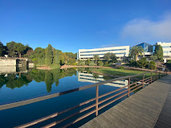
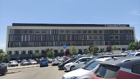
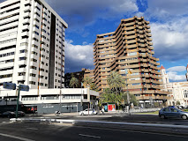

QUIENES SOMOS
| Universidad Europea de Madrid | Sea cual sea tu área de conocimiento, alcanzarás tus metas profesionales a través de nuestro modelo de aprendizaje experiencial. Instalaciones a la vanguardia y diseñadas para tus necesidades. Vive dentro del Campus en las dos residencias para más de 500 alumnos con todas las comodidades. Cuestiónatelo todo. Haz prácticas en el Hospital Simulado, el túnel del viento o en Europea Media. Aquí podremos estudiar DAW ASIR y DAM |  |
| Universidad Europea de Alcobendas | Aprenderás en uno de los núcleos empresariales más potentes de España a las puertas de Madrid. Elige entre las titulaciones más demandas a un paso del centro de Madrid. Mucho más que un campus. Nuestro modelo académico está pensado para acelerar tu éxito. Aprenderás en uno de los núcleos empresariales más potentes de España a las puertas de Madrid. Aquí podremos estudiar ASIR y DAM |  |
| Universidad Europea de Valencia | Sea cual sea tu área de conocimiento, alcanzarás tus metas profesionales a través de nuestro modelo de aprendizaje experiencial en instalaciones innovadoras. Ubicado en pleno centro de la ciudad, en el corazón verde de Valencia. Instalaciones a la vanguardia y diseñadas para tus necesidades. Mucho más que un campus. Nuestro modelo académico está pensado para acelerar tu éxito |  |

INSTALACIONES

PROFESORADO

HORARIOS

DONDE ESTAMOS